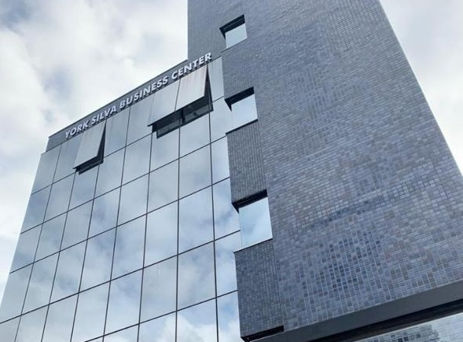

A Prefeitura de Contagem, por meio da Secretaria de Saúde, vai mudar a sede da UBS
Riacho (Unidade Básica de Saúde).
A UBS possui equipe com mais de 50 profissionais, responsáveis pelo atendimento de
aproximadamente 30 mil habitantes. Além disso, a unidade contempla cinco bairros:
Inconfidentes, Riacho das Pedras, Jardim Califórnia, Vera Cruz e Santa Cruz Industrial.
“Diante da grande população referenciada e aumento de serviços ofertados, houve a necessidade
de mudar para um espaço que contemplasse maior número de consultórios e melhorasse o acesso
da população, tanto no atendimento quanto na acomodação, com um espaço de espera maior e mais
ventilado”, é o que explica a diretora do Distrito Sanitário Riacho, Carolina Castro.
A mudança começou nesta segunda, e parte dos atendimentos já estão sendo realizados na nova
sede. Os profissionais do Núcleo Ampliado de Saúde da Família, que contam com sete categorias
profissionais, já estão atuando no novo endereço.
A realocação será feita de maneira gradual ao longo da semana e a inauguração da nova unidade
está prevista para a próxima segunda (26/7), às 9h30. Enquanto isso, os trabalhadores da saúde
estão comunicando a população sobre a mudança. Os habitantes que procuram atendimento na rua
Rio Verde, 171, na antiga unidade, estão sendo informados sobre o novo local para que tenham
tempo de se readequar.
Notícias - 21/07/2021, 13:57:12